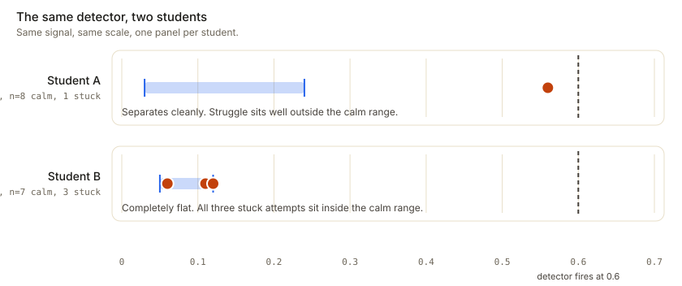

The theory behind a tutor that can see the page.
Three systems, and the ideas that shaped them. This page is about why Klera is built the way it is, not how the code is written. Implementation details stay private; we are happy to go deeper in conversation.
Five principles
Every design decision on this page traces back to one of these.
01
Ink, not text
The tutor's answer must be erasable, selectable ink on the student's own canvas, in the same coordinate space. A rendered string or a video does not belong to the page.
02
The individual, not the population
Every signal is read against the student's own normal. A threshold that works on the average student is wrong for most real ones.
03
Fusion, not a detector
No single signal is allowed to decide anything. Each is weak and noisy on its own; accuracy comes from the combination.
04
Withhold by default
The hardest thing in tutoring is not answering. When uncertain, show; when confident a student is ready, make them do it.
05
Refuse rather than mislead
A confidently wrong diagram or a wrong verdict teaches something false. Every generative step can be refused, and the floor cannot fail.
Handwriting
Why generated maths looks generated, and what to do about it.
Human ink, arranged by a typesetter
Synthesising strokes from a formula produces handwriting that is too regular to read as human. Klera instead draws from captured human strokes and places them into a mathematical layout, so the geometry is correct and the line quality is real. Common multi-symbol runs are captured as whole phrases, because their internal spacing is exactly what symbol-by-symbol drawing gets wrong.
Correlated variation, not jitter
The tell of synthetic handwriting is independent randomness: every glyph wobbles on its own. A real hand varies coherently. Slant, size and baseline drift are properties of the writer on that day, and they change slowly across a line. So the variation is decided once per piece of writing and applied smoothly, with only a small, bounded amount left independent per symbol.
Degrade gracefully, never visibly
Coverage is never complete. When a symbol has no captured template, older rendering generations step in for that symbol, that line, or the whole render, in that order. Every level is silent, and none of them can emit garbage ink. Keeping the old engines is not nostalgia; it is the fallback.
Deterministic by design
The same input renders identically twice. Timing is derived from the strokes themselves, and one schedule is the single source of truth for the animation, the debug overlay and the tests. That turns “does this look right?” from a human judging screenshots into an assertion.
Written at reading pace
Strokes appear at the speed of a calm, deliberate tutor, so a student can follow the line being formed. Instant output is faster and teaches less.
The visual engine
Generating a diagram is easy. Refusing a wrong one is the work.
The model recommends, the engine decides
A language model is good at noticing that a picture would help and bad at knowing when its picture is wrong. So its role is advisory. Deterministic rules decide what kind of visual a problem actually earns, for example refusing a third dimension unless the maths genuinely lives in space.
A cascade, from most trusted to least
Hand-built, validated templates come first. Generated visuals are tried only when no template fits, and each one must pass a gate: a static check on what it is allowed to do, and a behavioural check that it actually renders something meaningful. A refusal at any level falls through to the next.
A floor that cannot fail
The last level is local and deterministic, and it never invents mathematics. If nothing honest can be drawn for this problem, it says so and offers to try again. Everything runs on the device, so there is no network between a student and their diagram.
The learner profile
A model of one student, built from evidence a transcript cannot contain.
A chat tutor sees a student twice per exchange. Everything a human tutor reacts to happens in between. The profile exists to capture that gap, and to be honest about how much it actually knows.
Six families of evidence
| Family | What it observes | Why it matters |
|---|---|---|
| Pen behaviour | How the pen moves: hesitation, fluency, pressure, erasing | The long stare at a blank page never reaches a chat window. |
| Help behaviour | How much help was asked for, and whether they tried first | “Solved after a nudge” and “asked for the answer” look identical in a transcript. |
| Work structure | Where the working first went wrong, and whether they fixed it themselves | Knowing an answer is wrong is close to useless. Knowing where is teaching. |
| Silent verification | A quiet check of work the student never asked about | The problems a student got wrong and moved on from are the most informative ones. |
| Language | How they sound when they talk to the tutor | “I have no idea” is the cheapest signal in the room. |
| Difficulty | What they attempt and what they finish unaided | “Good at maths” is not a level. A demonstrated ceiling is. |
From raw signal to a teaching decision
Measure
Every family is observed on every attempt, continuously and invisibly.
Normalise
Each signal becomes a deviation from this student's own baseline, never a population average. Nothing is scored until the baseline has seen enough clean work.
Interpret
Deviations are combined into states, each carrying its own confidence. An attempt with four agreeing signals moves the model further than one with a single signal.
Remember
Slow traits accumulate across sessions and deliberately decay. One bad afternoon cannot rewrite a student, and last term's verdict cannot outlive the student it described.
Act, then check
The profile chooses how to teach, and every choice is scored by what the student did next.
Confusion and frustration need opposite responses
Most affect models collapse everything unpleasant into one “struggling” bucket. Learning research says that is a mistake. We follow the flow model: challenge and skill have to stay in balance, and the states either side of that balance call for different moves.
Boredom
Skill has outrun the challenge. The answer is to make it harder. Helping more makes it worse.
Confusion
Stuck but still attempting. This is where learning happens. The smallest possible nudge, then leave them alone.
Frustration
Confusion escalating toward giving up. Rescue early; the read is deliberately biased toward catching it.
Why per-student, and why fusion
The obvious design is a global threshold: this much pressure means stress. Instrumented sessions on real iPads showed why that fails. For one student, being stuck shows up as pressing harder. For another, pressure is completely flat, and being stuck shows up as going still before the pen touches the page. The channel that separates one student is flat for the other.
- Calm attempts, measured range
- Genuinely stuck attempts

Help is a measurement, not just a menu
A solve after a small hint is strong evidence of skill; a solve after the full answer is almost none. Weighting evidence by the help that preceded it means a student cannot inflate their own model by asking for solutions.
The loop that closes
Each way of teaching is treated as an option to be evaluated per student, and scored by what the student did next. Over time the profile models not just the student, but how that student responds to being taught a particular way.
Absence of evidence is not evidence
“We have not checked this yet” must never be read as “the student failed”. Unknown outcomes stay unknown, so the system cannot invent a struggling student out of its own backlog.
Know when you don't know
The profile carries an explicit readiness verdict: is there enough evidence to act on at all? A new student is treated as unknown, not as average.
Guided solve
The profile's most visible output: deciding when to make a student do it.
A decision, not a setting
A student cannot reasonably be asked whether they are ready to be pushed. That judgement needs the difficulty of the problem, their current state, how well the tutor knows them yet, and whether they are already distressed. It is made per problem, and it is conservative: every answer that amounts to “we don't know yet” resolves to showing the solution. Pushing a student who is not ready is worse than solving one they could have managed.
Earned praise
The tutor tracks how much the student actually wrote versus how much it revealed, and the closing words follow from that. A tutor that praises everyone stops being worth listening to.
The turn loop has no button
Clear the wrong path
Explain why it went wrong, keep what was right, then hand over from there.
Prompt once
In a register that follows the student's profile.
Watch the canvas
The student's handwriting ends the turn, not a tap.
Treat silence and errors differently
A wrong line gets a nudge that never reveals the answer. Silence gets encouragement, then the step.
Research we build on
None of these ideas are ours. Making them work on a live canvas is.
Flow
Csikszentmihalyi. Learning happens when challenge sits just above skill; boredom and anxiety sit either side.
Zone of proximal development
Vygotsky. The next problem should be reachable with a little help, not without any.
Productive failure and desirable difficulty
Kapur; Bjork. Struggle that ends in progress is the goal, not something to rescue students from.
The assistance dilemma
Koedinger and Aleven. Too much help and too little both hurt; the right amount depends on the learner.
Confusion in learning
D'Mello and Graesser. Confusion that resolves helps learning; confusion that does not becomes frustration.
Self-determination
Deci and Ryan. Autonomy and competence sustain motivation; scores and streaks crowd it out.
Come and work on this
A small team with more open problems than we can get through. If any of the above is what you want to spend your time on, write to us, and tell us which part of this page you think is wrong.
AI and applied modelling
The tutoring loop, silent verification and calibrated problem generation. The hard problem is not getting a model to answer maths. It is getting one to withhold the answer correctly.
Data and learning science
Per-student baselines, evidence fusion, and the study design that lets us change a model without fitting it to noise.
No formal posting and no process. A short email about what you have built is plenty.